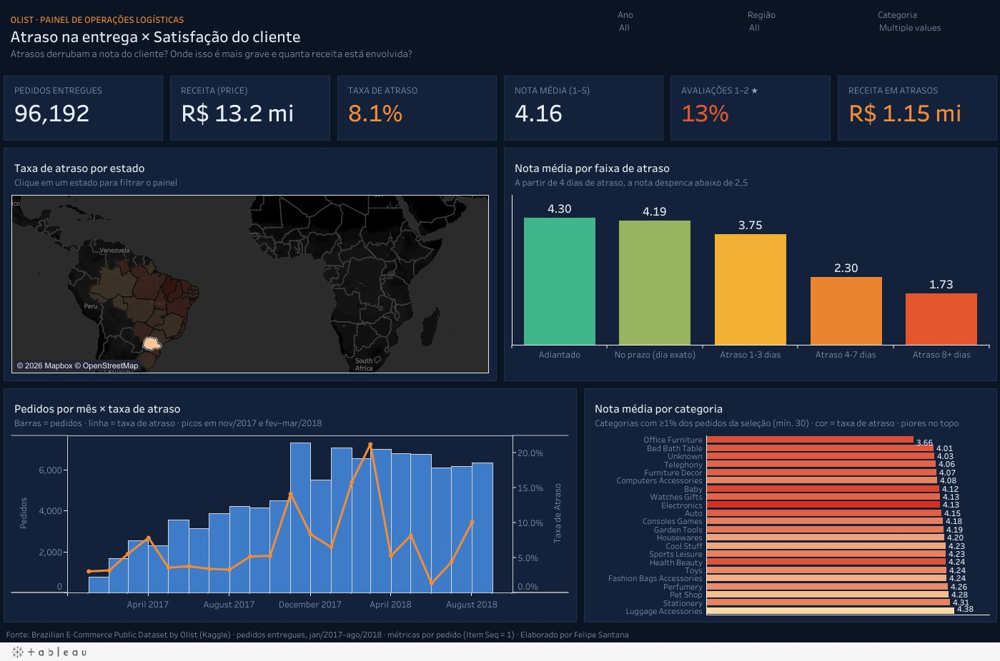
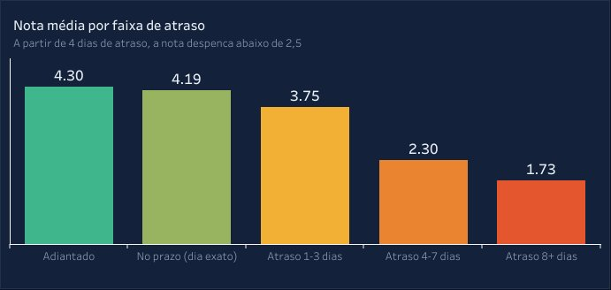
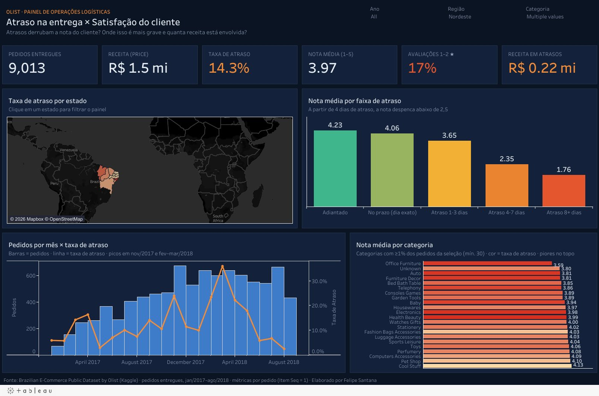
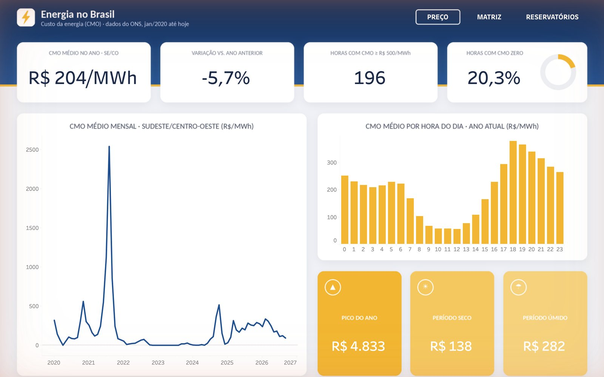
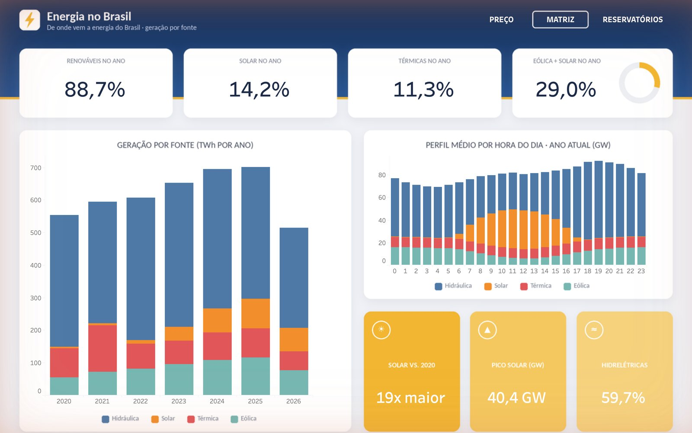
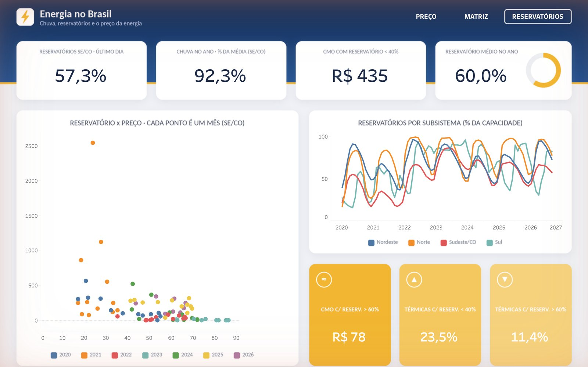
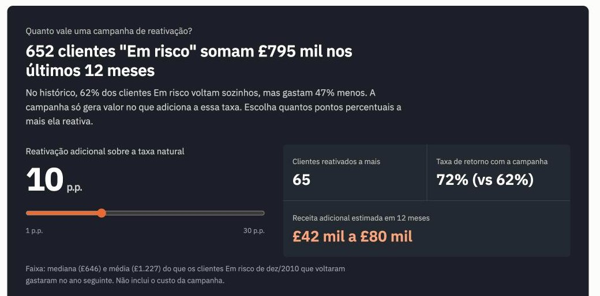
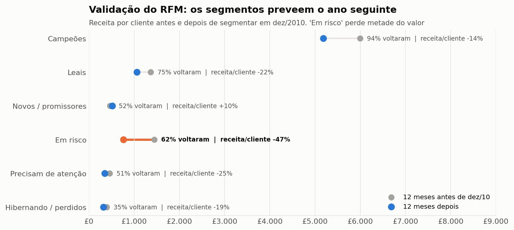
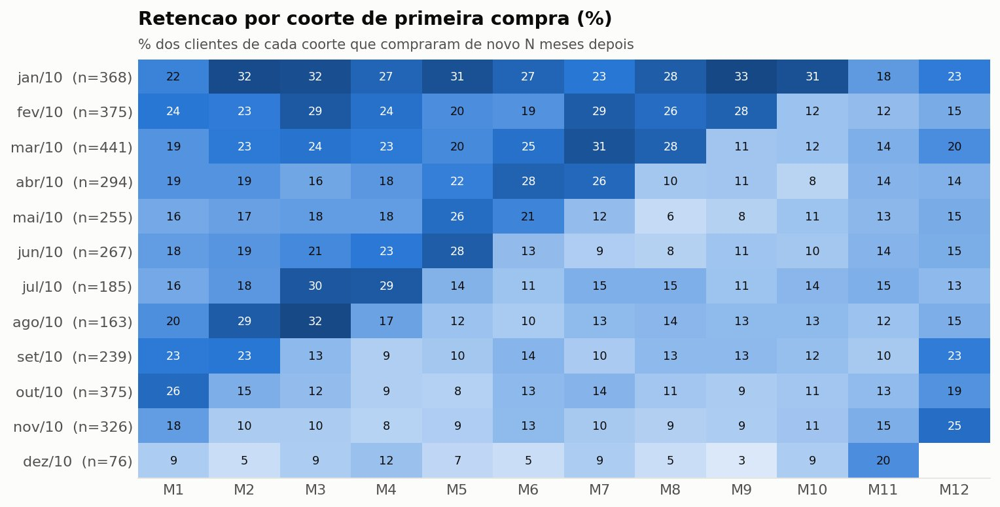

Sou Felipe Santana, tecnólogo em Ciência de Dados pela FIAP. Construo análises ponta a ponta: coleto e limpo os dados em Python, modelo e testo em SQL com dbt e entrego a resposta em um dashboard com recomendações práticas.
Os projetos Olist e Energia seguem essa arquitetura, orquestrada por um único pipeline.py. O projeto de varejo é SQL-first: modelagem, testes e métricas em DuckDB puro, com dashboard web próprio. Todos têm o código completo no GitHub.
96 mil pedidos do marketplace Olist, de jan/2017 a ago/2018. A pergunta: quanto o atraso pesa na nota do cliente, onde o problema é mais grave e quanta receita está envolvida.



Seis anos de dados horários abertos do ONS (cerca de 240 mil registros, de 2020 até hoje) cruzando custo da energia, nível dos reservatórios, chuva e geração por fonte nas quatro regiões do país.



1 milhão de linhas de vendas reais de um e-commerce de presentes do Reino Unido, de dez/2009 a dez/2011. A pergunta: de onde vem a receita, quais clientes sustentam o negócio e quanto vale reativar quem está sumindo.



Tecnólogo em Ciência de Dados pela FIAP (2024–2026), em São Paulo. Antes da área de dados, trabalhei com suporte de TI, onde automatizei tarefas recorrentes e montei relatórios de indicadores internos.
Busco uma vaga de Analista de Dados ou BI júnior, com interesse especial nos setores financeiro e de seguros.